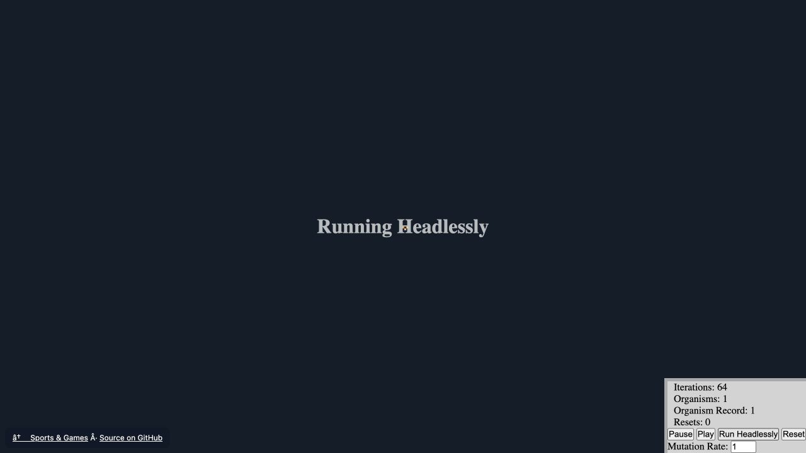

JavaScript · HTML Canvas
Evolution Simulator
Overview
Watch organisms reproduce and mutate in a live simulation with adjustable mutation rate and playback controls.
The simulation makes the behavior of small agents visible over time. Watching the scene reveals how individual actions contribute to a changing population or environment. The project-specific summary identifies the behaviors and controls that are actually implemented, while the overview provides a visual entry point to the simulation before visitors open it.
What it includes
- Agent behavior
- Changing simulation state
- Visual feedback over time
